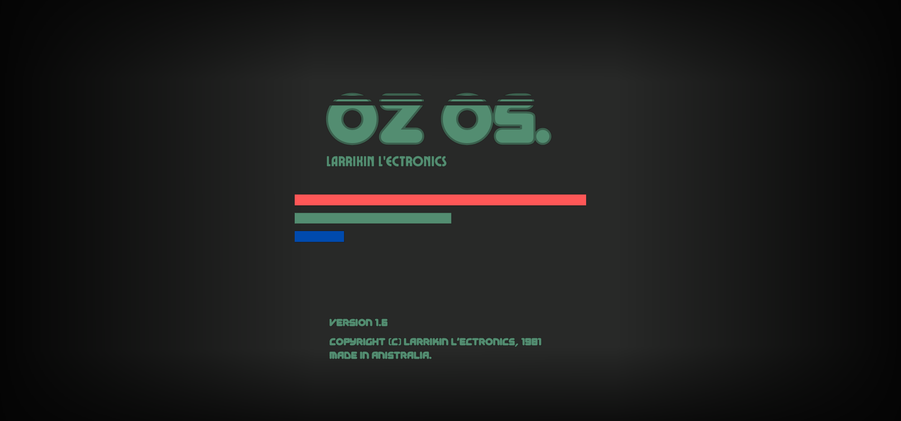

Larrikin L'ectronics. Please log in.

Commander Irwin Crocky. Write a few sentences about yourself here.
List your best work here.
Welcome to the OZ OS universe. Add your stories, characters and timelines here.
Tell people how to reach you here.